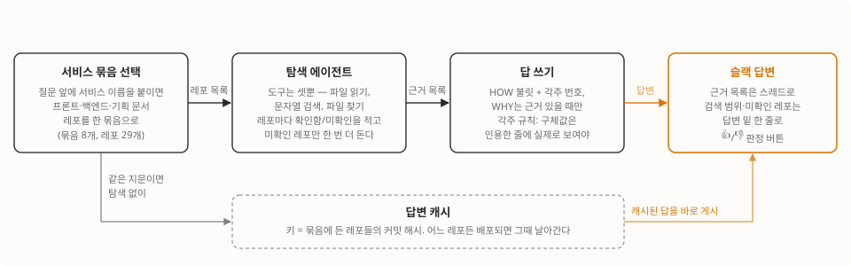

“이 코드 왜 이렇게 돼 있어요?”에 답하려고, 슬랙에서 한글로 물으면 회사 레포를 직접 뒤져 근거 파일과 줄 번호를 붙여 답하는 봇을 만들었어요. 추측을 막는 건 프롬프트 한 줄이 아니라 각주 검증, 출처 등급, 레포 전수 확인, 생성물 격리라는 네 가지 설계고요. 두 달 굴리는 동안 레포 29개를 8개 서비스 묶음으로 엮었고 검색은 한 번 갈아엎었는데, 답이 얼마나 좋아졌는지는 아직 숫자로 못 재요. 한 달에 들어온 질문이 3건이라서요. 그 얘기까지 정직하게 적어 볼게요.

문제는 검색이 아니라 기록이었어요
새로 온 분이 “이 코드 왜 이렇게 돼 있어요?”라고 물으면 저도 대답을 못 할 때가 많아요. 코드가 어떻게 동작하는지는 읽으면 알아요. 근데 왜 그렇게 했는지는 커밋 메시지에도 코드에도 없거든요. 시작할 때 손에 있던 것과 없던 것을 정리하면 이래요.
있던 건 둘이에요. 회사 레포들이 있었고, 기획팀이 마크다운으로 관리하는 정책 문서 레포가 있었어요. 정책, 기능 정의, 화면 정의가 전부 파일이라 “왜”의 출처로 쓸 수 있겠다 싶었죠.
없던 것도 둘이에요. 하나는 둘을 연결하는 대응표예요. 기획 문서는 “교육기간”이라고 쓰는데 코드는 영문 스네이크케이스 필드명을 써요. 둘이 같은 거라는 건 사람만 알죠. 다른 하나는 평가 기준이에요. 같은 질문을 반복해 던져 놓고 고치기 전후를 비교할 기준 질문 목록이 없었어요. 이 얘기는 글 끝에서 다시 해요.
그래서 봇에 기대한 것도 “다 알려주는 봇”이 아니었어요. 결정 이유가 남는 자리를 만들어 두고, 봇이 거길 찾아 답하게 하고, 없으면 “문서화되지 않음”이라고 정직하게 적게 하자. 이게 쌓이면 어디부터 문서화해야 하는지 목록이 되기도 하고요.
질문은 네 단계를 거쳐 답이 돼요
봇은 질문 하나를 네 단계로 처리해요. 서비스 묶음을 고르고, 탐색 에이전트가 레포를 뒤지고, 다른 모델이 근거 목록을 받아 각주 규칙대로 답을 쓰고, 슬랙에 올려요. 앞의 도해 네 상자가 그 순서예요.
묶음부터 볼게요. 봇은 이걸 그룹이라고 부르는데 이 글에서는 묶음으로 통일할게요.
- 질문 앞에
[SaaS],[채용]처럼 서비스 이름을 붙이면 그 서비스의 프론트, 백엔드, 기획 문서 레포를 한 묶음으로 봐요. - 묶음에 든 레포 수는 서비스마다 달라요. 적으면 하나, 어드민처럼 많으면 열둘이에요. 묶음이 8개고 레포가 29개인데 한 레포가 여러 묶음에 들어가 있기도 해요.
- 답변 밑에는 어느 묶음의 레포 몇 개가 검색 범위였는지 한 줄이 붙고, 답이 맞았는지 누르는 👍/👎 버튼도 붙어요. 사용자가 묶음을 잘못 골랐을 때 답을 보고 알아채라고요.
탐색은 에이전트가 해요. 파일 읽기, 문자열 검색, 파일 찾기 세 가지만 주고 레포를 직접 뒤지게 하고, 결과는 파일 경로와 줄 번호가 붙은 근거 목록이에요. 그 목록을 다른 모델이 받아서 답을 써요. 코드가 어떻게 동작하는지(HOW)는 한 줄짜리 불릿에 각주 번호를 달고, 왜 그렇게 했는지(WHY)는 근거가 있을 때만 쓰고 없으면 “문서화되지 않음”이라고 적어요.
답은 캐시해요. 키는 묶음에 든 레포들의 커밋 해시를 이어 붙인 지문이에요. 시간이 지나면 만료되는 건 없고 어느 레포든 배포돼서 해시가 바뀌면 그때 날아가요. 코드가 안 바뀌었는데 답이 바뀔 이유는 없으니까요.
”추측 금지”는 프롬프트가 아니라 네 가지 설계로 막았어요
프롬프트에 추측 금지라고 적어 두면 될 줄 알았어요. 그런데 모델은 근거가 비면 가까운 파일을 근거로 삼고, 문서랑 코드가 어긋나면 문서를 믿고, 요약본이 있으면 요약본을 인용하고, 레포 하나에서 답이 나오면 나머지는 안 봐요. 넷 다 실제로 당하고 나서 각각 설계가 됐어요.
각주 검증: 구체값은 인용한 줄에 실제로 보여야 해요
역할 코드 네 종류를 설명하는 답이 나왔는데, 각주가 그 코드가 없는 모델 파일을 가리키고 있었어요. 문장은 그럴듯한데 눌러 보면 없는 거죠. 그래서 코드값이나 숫자, 이름 같은 구체값을 쓸 때는 인용한 줄에 그 값이 실제로 보이는지 확인하게 했어요. 안 보이면 그 문장을 빼거나 “검색 결과에 없음”이라고 쓰고요. 가까운 파일에 각주를 대신 붙이는 것도 금지예요. 이건 답을 쓰는 모델에 주는 규칙이지 별도 프로그램이 대조하는 건 아니에요. 다만 “추측하지 마라”가 아니라 “이 값이 이 줄에 보이는지 확인하고 안 보이면 이렇게 하라”는 절차로 적었어요. 그게 다른 점이에요.
출처 등급: 설계 문서는 “그때 의도”로만 써요
설계 문서엔 폐기된 대안이 그대로 남아 있어요. 그걸 현재 동작이라고 믿고 답하면 틀리죠. 그래서 출처마다 무엇의 근거로 쓸 수 있는지 등급을 나눴어요. 라벨을 붙이는 건 코드가 하고, 그 라벨을 어떻게 다룰지는 답을 쓰는 모델의 프롬프트가 정해요.
| 출처 | 어떻게 동작하나(HOW)의 근거로 | 왜 그렇게 했나(WHY)의 근거로 |
|---|---|---|
| 코드 | 써요. 문서와 어긋나면 코드가 맞아요 | 코드 자체는 이유를 말해 주지 않아요. 커밋 메시지에 이유가 적혀 있으면 그게 근거가 돼요 |
| 기획 문서(정책·기능 정의·서비스 정의) | 써요 | 써요. 결정이 적힌 파일이라 모델에 먼저 넣어요 |
| 설계 문서 | 안 써요. “설계 시점 의도” 라벨로만 넘겨요 | 써요 |
| 레포 지도(용어 대응표) | 안 써요. 검색 출발점으로만 봐요 | 안 써요 |
| 봇이 만든 초안 | 검색 대상에서 빼요 | 검색 대상에서 빼요 |
기획 문서 줄은 사연이 있어요. 모델에 한 번에 넣을 수 있는 글자 수가 정해져 있는데, 문서를 알파벳순으로 읽으니까 앞 레포의 큰 문서가 그 자리를 다 차지했어요. 뒤 레포의 정책 문서는 아예 잘렸고요. 결정이 적힌 파일이 먼저 들어가게 순서를 고정했어요.
생성물 격리: 봇이 만든 문서를 봇이 인용했어요
이게 좀 웃긴데, 문서화 백로그 초안을 봇이 만들어 두는데 그게 검색 대상에 섞여 들어가서 원본 대신 그 초안이 근거로 잡힌 거예요. 자동 생성물을 색인에 넣으면 요약이 원본을 밀어내는 메아리가 생겨요. 생성물 폴더를 검색에서 통째로 뺐어요. 뒤에 나올 레포 지도도 같은 이유로 같은 취급을 받아요.
레포 전수 확인: “없음”과 “미확인”을 갈라요
레포가 여러 개면 한 레포에서 답이 나오는 순간 나머지를 건너뛰기도 해요. 이 사례는 뒤의 시나리오에서 보여 드릴게요. 개요 질문에서 README만 읽고 레포를 판단한 적도 있고요. 프론트 레포 README에 배포 절차만 있어서 소스 1,200개를 못 보고 “빌드 스크립트뿐”이라고 답했거든요.
지금은 모든 레포를 한 번씩은 훑게 하고, 못 본 레포는 “없음”이 아니라 “미확인”으로 적게 한 다음 미확인 레포만 한 번 더 돌려요. 그래도 남으면 답변 밑에 미확인이라고 표시하고요. 레포마다 소스 디렉토리를 한 번은 나열해야 “확인함”이라고 적을 수 있어요.
검색은 통째로 갈아엎었어요
여기까지 하고 나니 답의 품질은 잡혔는데, 정작 말썽은 제일 앞단인 검색에서 났어요. 처음엔 모델이 질문에서 검색어를 뽑고 그 검색어로 grep을 돌려서 상위 파일을 읽는 구조였거든요. 한글 질문을 영문 식별자로 바꾸는 단계가 돌릴 때마다 흔들려요. 같은 질문인데 정답 파일이 나왔다 안 나왔다 하는 거죠. 달력 입력이 특정 기간 안으로만 제한되는지, 시작 후 7일 유예 규칙이 어디 있는지, 프로젝트 정책이 뭔지, 이 세 질문에서 연달아 놓쳤어요.
먼저 번역 재료부터 만들었어요. 레포마다 코드를 스캔해서 실제로 있는 컴포넌트, 필드, 테이블, API 경로를 뽑고, 거기에 기획 용어집을 붙여서 “앱 용어는 코드에서 이 식별자고 이 파일에 있다”는 표를 만들게 했어요. 이걸 레포 지도라고 불러요. 스캔이 빈 레포에서는 모델이 없는 식별자를 지어내서 표를 채우길래, 식별자가 진짜 코드에 있는지 대조하는 검증을 넣고 인벤토리가 비면 아예 모델을 안 부르게 했고요.
근데 이 표가 새 문제를 만들었어요. 표엔 모든 식별자가 다 들어 있으니 검색 순위 1, 2위가 늘 표예요. 그리고 모델이 표를 근거로 인용해요. 표는 요약본이라 코드가 바뀌면 틀리는데요. 위 출처 등급표대로 지도는 검색어 고를 때 출발점으로만 쓰고 출처로는 못 쓰게 했어요.
그래도 번역 단계가 남아 있는 한 흔들림은 그대로였어요. 그래서 검색 단계를 아예 에이전트한테 넘겼어요. 파일 읽기, 문자열 검색, 파일 찾기를 주고 알아서 뒤지게 하니까 검색어를 한 번에 맞혀야 하는 층 자체가 사라졌죠. 실패하면 예전 grep 경로로 돌아가고요.
에이전트로 바꾸니 함정은 다른 데서 나왔어요. 셸 도구를 줬더니 허용 목록 밖 명령을 시도하다 권한 거부 한 번에 탐색 전체가 죽었어요. 되물을 수 없는 일회성 실행이라서요. 셸은 빼고 커밋 이력은 봇이 인용된 파일 기준으로 직접 뽑아 넣게 했어요. 앞 절에서 말한 레포 건너뛰기도 이 시기에 나온 함정이에요.
실제로 물어보면 이렇게 답해요
두 장면을 골랐어요. 하나는 잘 된 경우고, 하나는 못 찾았다고 답한 경우예요.
잘 된 경우: “달력 입력이 특정 기간 안으로만 제한되나요?”
제약이나 가능 여부를 묻는 질문은 화면 입력 제한, 프론트 검증, 서버 검증처럼 층별로 나눠 답하게 돼 있어요. 검색 결과에 있는 층은 빠짐없이 쓰고, 없는 층은 “검색 결과에 없음”이라고 쓰고, 없다고 단정은 못 해요.
이 질문은 나중에 코드 그래프 도구를 붙였다 뗄 때 기준 질문 네 개 중 하나로 썼는데, 도구를 켜든 끄든 여덟 번 비교 내내 핵심 근거 파일은 매번 찾았어요. 여러 실행에 걸쳐 인용된 근거를 모으면 날짜 입력 컴포넌트에서 제한값이 전달되는 경로, 서버 검증 규칙의 본체, 데이터베이스 제약, 정책이 다른 과정에도 적용된다고 확정한 기획 문서예요. 실행마다 이 중 어느 것이 실리는지는 조금씩 달랐고, 핵심 근거 파일은 흔들리지 않았고요. 답변 형태는 이래요. 근거 목록은 본문 밑 스레드로 따로 붙고, 각 불릿은 그 목록의 번호를 가리켜요.
🔍 HOW • 날짜 입력 컴포넌트가 과정의 시작일과 종료일을 최소·최대값으로 받아 그 밖의 날짜는 고를 수 없게 한다 [1] • 서버는 제출된 날짜가 과정 기간 안인지 검증해 벗어나면 거부한다 [2] • 데이터베이스 제약이 같은 조건을 한 번 더 건다 [3] 🧭 WHY • 정책 문서에 이 기간 규칙이 다른 과정 유형에도 공통 적용된다고 적혀 있다 [4] 검색 범위: [SaaS] 4레포
위 예시는 답변의 형태를 보여 주려고 여러 실행에서 인용된 근거 네 가지를 한 답에 모아 재구성한 거고, 실제 답의 원문은 아니에요. 식별자를 본문에 안 쓰고 한국어로 풀어 쓰는 것, 각주가 파일과 줄을 대신하는 것, 검색 범위가 밑에 붙는 것이 형태의 핵심이에요.
못 찾은 경우: 어드민 프론트 레포를 안 보고 “없음”이라고 했을 때
레포 전수 확인 설계가 나오기 전, 레포 12개짜리 어드민 묶음에 던진 테스트 질문에서 나온 오답이에요. 백엔드 쪽에서 답이 먼저 나오니까 탐색 에이전트가 어드민 프론트 레포는 열어 보지도 않고 “프론트 코드 없음”이라고 답했어요. 사용자 입장에선 봇이 다 보고 없다고 한 건지, 안 보고 없다고 한 건지 구분이 안 되죠.
지금은 같은 상황이면 답이 두 갈래로 바뀌어요. 탐색 에이전트가 레포마다 “확인함 / 미확인(사유)“을 한 줄씩 적고, 미확인 레포는 한 번 더 돈 다음, 그래도 남으면 답변 밑 검색 범위 줄 아래에 한 줄이 더 붙어요. 못 본 레포 이름이 그 줄에 들어가는데 여기서는 역할로 바꿔 적었어요.
검색 범위: [어드민] 12레포 미확인(못 본 레포): 어드민 프론트
관련 근거가 아예 없다고 판정되면 예전엔 grep 결과라도 끌어다 붙였는데, 이제는 무관한 코드 대신 이렇게 답해요. 실제로는 두 줄 사이에 탐색 에이전트가 적은 “왜 없는지” 설명과 캐시 키로 쓰는 커밋 해시 지문이 들어가는데, 레포 이름이 보여서 여기서는 뺐어요.
이 그룹에서 관련 코드를 찾지 못했습니다. 검색 범위: [어드민] 12레포
못 찾았다고 답하면 사용자가 다음 질문을 어디로 던질지 알 수 있어요. 그럴듯한 오답은 그걸 못 하고요.
무엇이 달라졌나
| 처음 | 지금 | |
|---|---|---|
| 검색 | 모델이 뽑은 검색어로 grep을 돌렸어요 | 탐색 에이전트가 파일 읽기·문자열 검색·파일 찾기로 직접 뒤져요. 실패하면 grep으로 돌아가요 |
| 레포 지도 | 없었어요 | 레포마다 용어 대응표가 있어요. 출발점으로만 쓰고 출처로는 못 써요 |
| 한 질문이 도는 범위 | 레포 하나였어요 | 그 서비스 묶음 하나예요(레포 1~12개). 묶음은 8개, 등록된 레포는 29개고요 |
| 각주 검증 | 가까운 파일을 가리키기도 했어요 | 구체값이 적힌 줄만 가리키게 규칙을 정했어요(프로그램이 대조하진 않아요) |
| 출처 등급 | 문서와 코드가 어긋나면 문서를 믿었어요 | 코드가 맞다고 봐요. 설계 문서와 요약본은 위 출처 등급표대로 제한해요 |
| 생성물 격리 | 봇이 만든 초안도 검색됐어요 | 생성물 폴더는 검색에서 빠져요 |
| 레포 전수 확인 | 안 본 레포를 “없음”이라고 했어요 | 레포마다 확인함/미확인을 적고, 못 찾으면 탐색 결론과 검색 범위를 붙여요 |
| 답이 좋아졌는지 | 못 쟀어요 | 아직도 못 쟀어요 |
마지막 줄이 이 글에서 제일 중요한 줄이에요. 운영 한 달 동안 들어온 질문이 3건이에요. 회귀 질문 목록이 없으니 고친 게 답을 좋게 했는지 판정할 근거가 늘 부족했어요. 위에 적은 설계는 전부 오답 한 건씩 보고 만든 거고요. 코드 그래프 도구를 비교할 때 기준 질문 4개를 처음 만들었는데, 그게 지금 있는 평가셋의 전부예요.
만들면서 배운 게 셋 있어요
추측 금지 한 줄로는 아무것도 못 막았어요. 막은 건 실패마다 붙인 구체적인 절차예요. 생성물 격리는 코드로 넣었고, 레포 전수 확인은 규칙은 프롬프트에 두되 미확인 레포를 다시 도는 부분만 코드로 넣었어요. 각주 검증과 출처 등급은 “무엇을 확인하고 안 보이면 어떻게 하라”는 절차 형태의 프롬프트로 넣었어요. 코드로 옮길 수 있는 건 코드로 먼저 옮기고, 프롬프트에 남기는 것도 금지어가 아니라 확인 순서로 적었어요.
요약본을 검색에 넣은 게 실수였어요. 레포 지도든 봇이 만든 초안이든, 요약이 검색에 들어가는 순간 원본보다 위에 뜨고 원본 대신 인용됐어요. 그래서 요약은 찾는 데만 쓰고 답에는 못 쓰게 했어요.
평가셋을 먼저 안 만든 게 이 봇의 제일 큰 구멍이에요. 이건 배웠다기보다 아직 못 한 일이에요. 질문이 들어오는 속도가 느리면 기다리지 말고 과거 질문과 기획 문서에서 기준 질문을 먼저 만들어 뒀어야 했어요.
이 봇의 탐색 단계에 코드 그래프 도구 세 개를 붙여서 켬/끔 비교한 얘기는 다음 글에 따로 적었어요. 미리 말하면 셋 다 뺐어요.